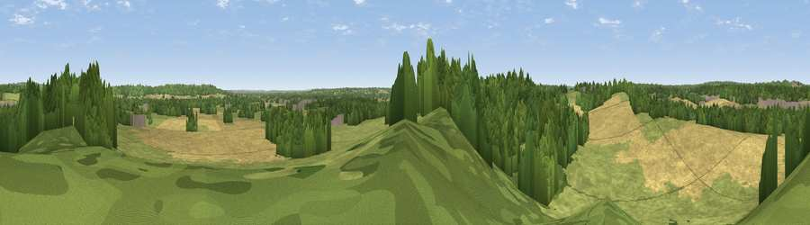

Viewpoint near Englefield
#39626 in England · top 50% of its area beats it · near EnglefieldWhere it is
The exact computed spot (SU 62225 72725). Click the marker for map links.
The view, rendered

A 360° render of this exact spot computed from the terrain model, tree cover and land cover — summer colours, afternoon light, calibrated against photographs of famous viewpoints. Real trees, hedges and buildings will differ in detail.
The panorama
Grey silhouette: terrain skyline in each direction (720 bearings, Earth curvature and refraction included). Dashed green: skyline with trees (+15 m) and buildings (+8 m) as obstacles. Blue strip: how far the ground is visible on each bearing.
Where the view opens
Wedge length = distance to the farthest visible ground on that bearing (vegetation-aware). Rings at 10, 25 and 50 km.
What fills the view
36% grassland · 31% woodland · 31% cropland · 2% built-up
Angular shares of the visible panorama (visual magnitude), not map area. Landscape diversity 0.51 (0–1 Shannon).
Key numbers
More beautiful places nearby
The staircase of upgrades: each row has a higher view potential than everything closer. Driving times are estimates from straight-line distance, calibrated against real road routing — check an actual route before setting out.
| Place | Direction | Drive | Score |
|---|---|---|---|
| Viewpoint near Tidmarsh | ENE · 3 km | ~7 min | 31.1 |
| Viewpoint near Theale | E · 3 km | ~7 min | 31.8 |
| Viewpoint near Whitchurch-on-Thames | NNE · 5 km | ~12 min | 47.5 |
| Viewpoint near Streatley | NNW · 9 km | ~18 min | 57.2 |
| Viewpoint near Moulsford | NNW · 11 km | ~21 min | 58.8 |
| Viewpoint near Compton | NW · 13 km | ~23 min | 64.1 |
| Cottington's Hill | SSW · 19 km | ~32 min | 65.0 |
| Viewpoint near Ecchinswell | SW · 20 km | ~34 min | 65.7 |
51.45010, -1.10594 · source: screening · position refined by local search. Computed location — check access rights before visiting.